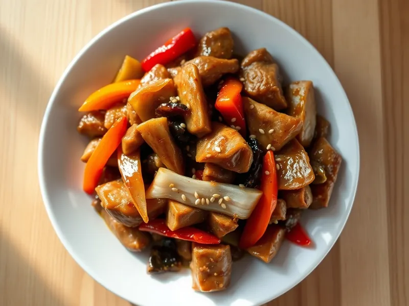

Свинина с болгарским перцем в соевом соусе
Полоски свинины с перцем и луком, быстро обжаренные в соево-чесночном соусе
25 мин2 порц.667 ккал на порциюБ 32 · Ж 50 · У 22Азиатская кухня
Открыть в приложении: порции, таймеры, список покупок
Продукты на 2 порц.
- Свинина350 г
- Перец болгарский2 шт
- Лук репчатый1 шт
- Чеснок2 зуб.
- Соевый соус3 ст. л.
- Крахмал2 ч. л.
- Сахар1 ч. л.
- Растительное масло2 ст. л.
- Кунжут по желанию1 ч. л.
Как готовить
- Нарежьте свинину тонкими полосками поперёк волокон. Перемешайте с 1 ст. л. соевого соуса и крахмалом, оставьте на 5 минут.
- Нарежьте перец полосками, лук полукольцами, чеснок мелко. Смешайте оставшийся соевый соус, сахар и 3 ст. л. воды.
- Разогрейте масло в сковороде на сильном огне. Обжарьте свинину 4-5 минут, помешивая, пока полоски не побелеют и не подрумянятся. Переложите в тарелку.
- В ту же сковороду бросьте лук и перец, жарьте на сильном огне 3-4 минуты: перец должен стать ярким, но остаться хрустящим.
- Добавьте чеснок на 30 секунд, верните мясо и влейте соус. Готовьте 1-2 минуты, пока соус не загустеет и не покроет мясо глянцем.
- Посыпьте кунжутом и сразу подавайте.
Совет. Режьте мясо полосками толщиной не больше 5 мм, а сковороду раскаляйте сильно: так свинина обжаривается, а не тушится в соку.